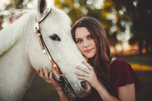
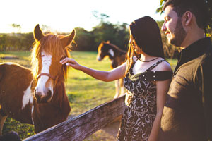
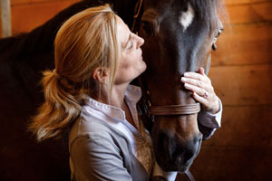

“I just wanted to send this note to tell you how much I appreciate all you've done for me. I know it must be hard to have a buyer so far away but you did an admirable job. I have a lot of respect for you and your very respected business, Walkers West. Should anyone I know be in the market for a Tennessee Walker, I will send them to you without hesitation! The hauler called earlier this morning to say everything went perfectly. He said "Boone" just walked right onto the trailer with no hesitation at all. He went on to say he thought he was really beautiful and very kind. I am so excited to meet him, finally. I will be taking the checks to the post office later this afternoon. All the best,"
- Ann

“My husband and I bought Dumas' Late Date and Rich Mark of Ebony from you several years ago. We bred Dumas to Mark and had a stud colt last February. His name is Dumas Walkers Masterpiece. We have been asked to consign him and will be selling this stud colt at the yearling festival at Sand Creek in Tennessee in September. Just wanted to keep you updated on how past horses from your farm are doing!"
- Amy Martinez Garcie

“I have no human kids but wanted to thank you for helping me have the chance to be the 'mom' of dearest Troy ! (Gold si or no)... He is doing great and I thank you so much for him. Enclosed find photo taken yesterday. All my best to you - from Troy (and Walt, too)"
- Charlene